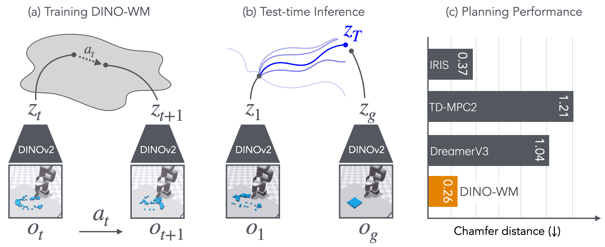

DINO-WM: World Models on Pre-trained Visual Features enable Zero-shot Planning

Figure 1: We present DINO-WM , a method for training visual models by using pretrained DINOv2 embeddings of image frames (a). Once trained, given a target observation o T o_{T} , we can directly optimize agent behavior by planning through DINO-WM using model predictive control (b). The use of pretrained embeddings significantly improves performance over prior state-of-the-art world models (c).
原图及图注归论文作者所有；保留出处供研究阅读，不代表获得再分发授权。![Figure 1 : V-JEPA 2 Overview. Leveraging 1M hours of internet-scale video and 1M images, we pretrain the V-JEPA 2 video model using a visual mask denoising objective ( Bardes et al., 2024 ; Assran et al., 2023 ) , and leverage this model for downstream tasks such as action classification, object recognition, action anticipation, and Video Question Answering by aligning the model with an LLM backbone. After pretraining, we can also freeze the video encoder and train a new action-conditioned predictor with a small amount of robot interaction data on top of the learned representations, and leverage this action-conditioned model, V-JEPA 2-AC, for downstream robot manipulation tasks using planning within a model predictive control loop.](assets/figures/2506.09985-v-jepa-2.png)
![Fig. 2 : Overall architecture of VO-DP. VO-DP has four core modules: 1) VGGT Encoder extracts semantic features from patchified images via DINOv2 and generates geometric features through its AA network; 2) Semantic-Geometric Fuser fuses per-frame geometric and semantic features using residual cross-attention and an FFN; 3) Spatial Compression module reshapes fused features, downsamples them with a lightweight ResNet, and concatenates the compressed spatial features with proprioceptive observations to form compact scenario representations; 4) Vision-Only Conditioned Action Generation module employs a DDPM-based policy head to generate actions using the scenario representations.](assets/figures/2510.15530-vo-dp-feature-fusion.png)
![Figure 1 : Left: Training of JEPA-WM: the encoder E ϕ , θ E_{\phi,\theta} embeds video and optionally proprioceptive observation, which is fed to the predictor P θ P_{\theta} , along with actions, to predict (in parallel across timesteps) the next state embedding. Right: Planning with JEPA-WM: sample action sequences, unroll the predictor on them, compute a planning cost L p L^{p} for each trajectory, and use this cost to iteratively refine the action sampling. The action encoder A θ A_{\theta} and proprioceptive encoder E θ p r o p E_{\theta}^{prop} are not explicitly displayed in this figure for readability.](assets/figures/2512.24497-what-drives-jepa-wm.png)
![Figure 1 : Which latent space makes a better robotic world model? For a latent diffusion model, we fix the Diffusion Transformer (DiT) transition model, action conditioning, and training data. We vary only the encoder f ϕ f_{\phi} defined latent interface: encoder, optional compression adapter, and the associated decoder path. This isolates how reconstruction-aligned and semantic representations affect action-faithful dynamics, generated rollouts, and downstream policy performance for robot control. We show the encoder families compared in the bottom panels.](assets/figures/2605.06388-reconstruction-or-semantics.png)
![Figure 1 : Overview of our framework. We introduce the Residual Latent Action (RLA), which compresses the DINO token residual s t + h − s t s_{t+h}-s_{t} into a compact latent z z . We discover that RLA is predictive, generalizable, and encodes temporal progression. Next, we propose the RLA World Model (RLA-WM), which learns from offline videos and predicts RLA z z instead of s t + h s_{t+h} directly. RLA-WM achieves accurate future prediction while being more efficient than state-of-the-art feature-based and video diffusion world models. Our approach enables two applications: learning policies from actionless videos and visual reinforcement learning via interaction entirely within RLA-WM.](assets/figures/2605.07079-rla-wm.svg)
![Fig. 2: Overview of GIFT. Given the observation, instruction and robot state, GIFT attaches three training objectives to the intermediate visual tokens of a policy: geometry alignment with a frozen geometric foundation model, object-centric affordance prediction, and instruction-conditioned goal-region prediction. The default no-injection design does not route auxiliary predictions into the action pathway; the auxiliary objectives shape the shared intermediate features only through their training gradients. We instantiate the same principle in a VLA (top) and two WAM action formulations (bottom).](assets/figures/2609.04193-gift-intermediate-feature.png)
![Fig. 2: Overall architecture of JEPA Policy. A shared encoder processes both observations. 𝐳 t \mathbf{z}_{t} and 𝐳 t + k \mathbf{z}_{t+k} are the outputs of its image path at the two times. The conditioning vector 𝐜 t \mathbf{c}_{t} fuses 𝐳 t \mathbf{z}_{t} with low-dimensional inputs (Sec. III-B ); the fusion is omitted from the diagram. Action tokens 𝐪 a \mathbf{q}_{a} and future-representation tokens 𝐪 z \mathbf{q}_{z} enter one Transformer T θ T_{\theta} and interact in every self-attention layer. Separate heads produce the action sequence 𝐚 ^ t : t + H \hat{\mathbf{a}}_{t:t+H} and future observation representation 𝐳 ^ t + k \hat{\mathbf{z}}_{t+k} . The same encoder produces the stopped target 𝐳 t + k = E rgb ( o t + k ) \mathbf{z}_{t+k}=E_{\mathrm{rgb}}(o_{t+k}) . Shared processing allows the future-prediction objective to update the representation used by the action head.](assets/figures/2609.09630-jepa-policy.jpg)
![Figure 1: Overview of JEPA-WAM. For each language instruction ℓ \ell , we construct a visual-instruction bank ℬ ℓ \mathcal{B}_{\ell} containing K K images sampled from an instruction-conditioned text-to-image generator. One visual instruction is randomly sampled and encoded by frozen V-JEPA 2.1 and a learnable projector into compact representations Z ℓ Z_{\ell} at each training step. These representations condition the video and action experts together with the task instruction and current observations. The right panel shows the self- and cross-attention masks used during training and inference.](assets/figures/2609.20277-jepa-wam-visual-instruction.png)
![Figure 2: Comparison of WAM architectures. (a) Action-centered VDM-based WAMs use compressed VAE latents as visual inputs and jointly learn action generation and future frame prediction, but generate only actions at inference. (b) LaWAM ( Chen et al., 2026 ) predicts latent actions from VLM representations and uses a separate world model to predict future DINOv3 embeddings, which condition action generation at inference. (c) VLA-JEPA ( Sun et al., 2026 ) generates actions from VLM representations and uses latent action tokens to condition a separate world model supervised by V-JEPA2 embeddings during training. (d) LeWAM ses frozen I-JEPA embeddings as both visual inputs for action generation and targets for action-conditioned future prediction, learning both tasks with a single predictor while generating only actions at inference.](assets/figures/2609.27455-lewam-ijepa.svg)

![Figure 3: RoboJEPA training. The frozen V-JEPA 2.1 encoder f f ( Mur-Labadia et al., 2026 ) maps the input multiview frames x t ( 1 : V ) x_{t}^{(1:V)} to a grid of features. The predictor g θ g_{\theta} consumes per-step sequences of multiview visual ( z t ( 1 : V ) z_{t}^{(1:V)} ), action ( a t a_{t} ) and proprioceptive state ( s t s_{t} ) tokens, conditioned on view and embodiment identifiers, and predicts the next-step features z ^ t + 1 \hat{z}_{t+1} . Training minimises two losses: (left) the teacher-forcing loss , the per-token ℓ 1 \ell_{1} distance between predicted features and the next-step features from the encoder ( Equation 5 ); and (right) the rollout loss , which attempts to predict the same target sequence as the teacher-forcing loss, but given fewer input frames. The model is given the full training sequence of actions but only a prefix of the encoded features, and predicts the remaining features autoregressively, with a KV-cache. This way the model learns to make accurate long term predictions.](assets/figures/2610.10515-robojepa.png)